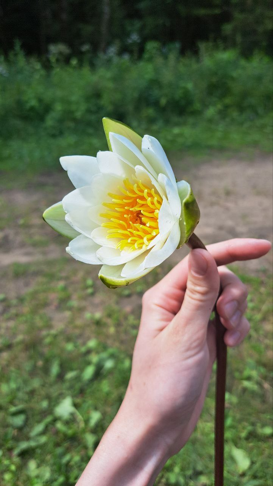
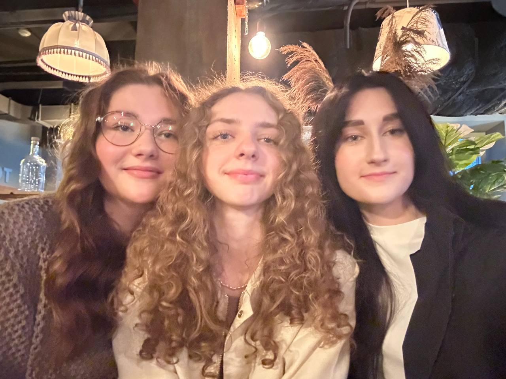
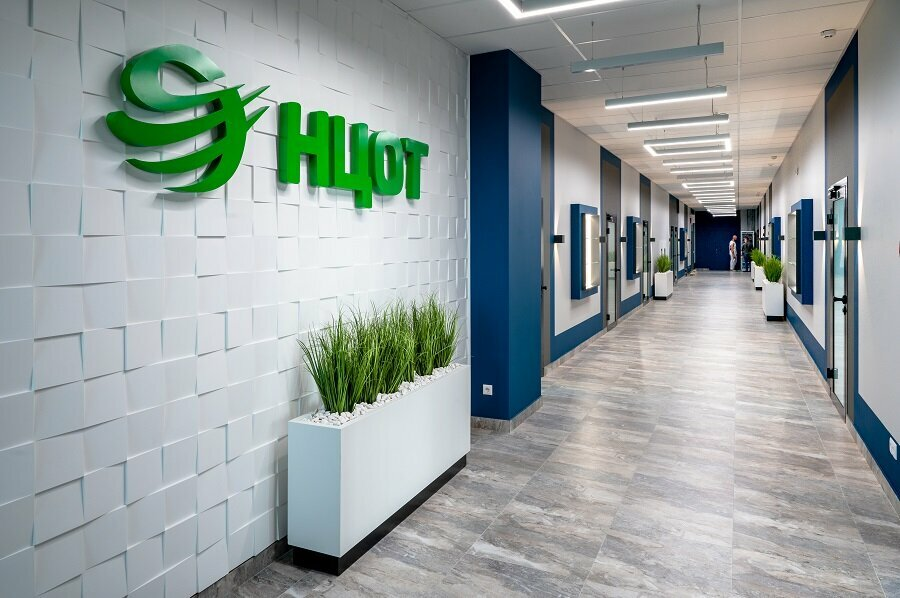
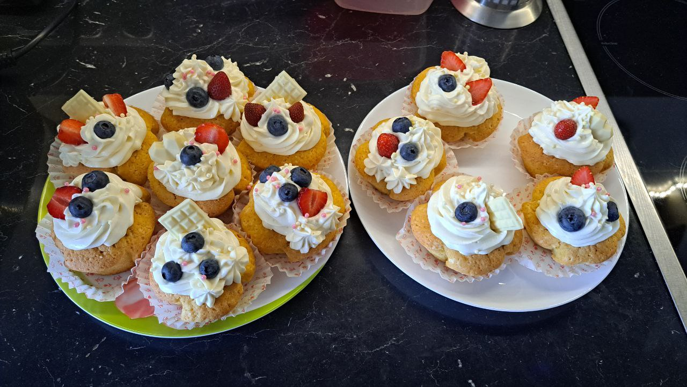

Тёплые дни, которые хочется сохранить
Как я
провела лето
Немного встреч, немного приключений
и много простых счастливых моментов.

Счастье в простых вещах
Встречаться. Гулять. Быть рядом.

Самое ценное —
время вместе
Этим летом мы с подругами выбирались погулять и проводили время вместе. Такие встречи стали одной из самых приятных частей моего лета.
В телефоне остались совместные фотографии, а в памяти — наши маленькие летние истории.
Лето пахнет
речкой и травой
Ещё я ездила на речку. Зелень вокруг, свежий воздух и возможность ненадолго отвлечься от привычных дел.
От этих поездок остался один из моих любимых летних кадров — белая кувшинка на фоне зелени.

Время для
нового опыта
Лето было не только про отдых: я проходила практику в НЦОТ. Между прогулками и встречами нашлось место и для знакомства с рабочей обстановкой.
Практика стала отдельной главой моего лета — с другим ритмом и новыми впечатлениями.
НЦОТДобавить
немного сладкого
А ещё этим летом я пекла сладости. На фото — капкейки с кремом, ягодами и кусочками белого шоколада.
Мне нравится, как из простых ингредиентов получается что-то красивое и вкусное. Такие домашние моменты тоже хочется сохранить.
Сделано с удовольствием
Лето заканчивается.
Тёплое остаётся.
В фотографиях, встречах и маленьких историях,
к которым приятно возвращаться.